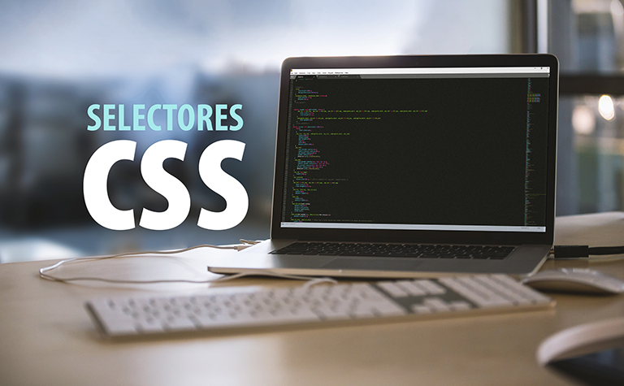

SELECTORES CSS

Los selectores funcionan para darle estilos a la pagina ejemplo a la fuente, los colores, fondos, bordes, márgenes y
relleno.
permiten seleccionar elementos específicos en una página web
La cascada de CSS es la forma en la que el navegador interpreta nuestra hoja de estilos, resolviendo las
declaraciones CSS y los posibles conflictos entre ellas.
La herencias css : heredan automáticamente de un elemento Por ejemplo, el color de fuente
Combinadores. Selecciona los elementos que se encuentran dentro de otros, cuando se encuentra entre las
etiquetas de apertura y de cierre del otro elemento.
Los atributos permiten seleccionar elementos que tienen un atributo específico o un valor de atributo
específico
En general, los selectores CSS son una parte esencial del diseño web y permiten a los desarrolladores
crear páginas web personalizadas , atractivas y llamativas
¿Cuáles son los selectores basicos de CSS?
Los selectores basicos son:
- DE TIPO
- DE CLASE
- DE ID
- DE ATRIBUTO y UNIVERSA

Cómo usar selectores en CSS
Existen dos formas posibles de emplear selectores en CSS. Si tienes en un mismo documento tu código en
HTML
y tu código en CSS, lo único que tienes que hacer es añadir los selectores CSS en la cabecera (< head>)
de
tu sitio. En el ejemplo que te presentamos más abajo puedes ver cómo funciona este método.
Si, por el contrario, tu HTML y tu CSS están en documentos separados, quizá tendrás un documento
etiquetado como index.html y otro como style.css. El archivo index.html deberá incluir una línea de
código que haga un llamado al archivo CSS para que los estilos se muestren en tu sitio web
correctamente.
REFERECIAS BIBLIOGRAFICAS
2.1. Selectores básicos. (s/f). Uniwebsidad.com. Recuperado el 10 de abril de 2023, de https://uniwebsidad.com/libros/css/capitulo-2/selectores-basicos